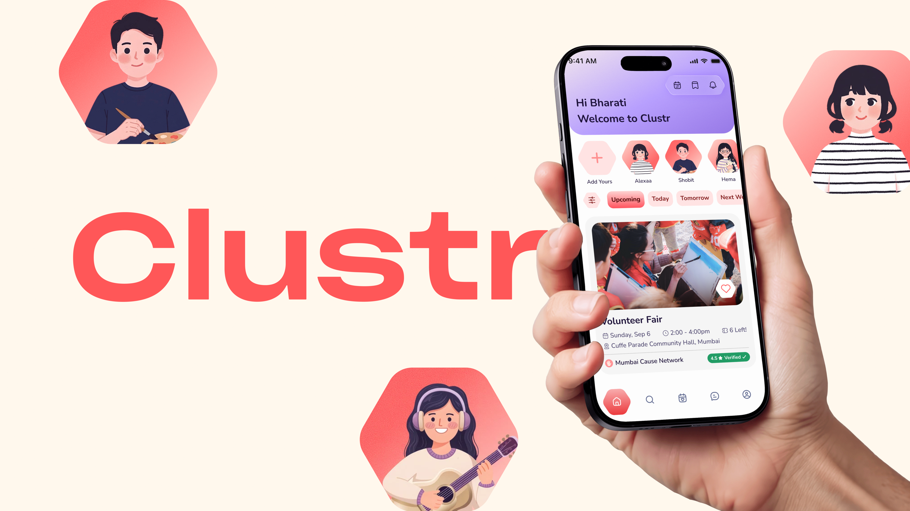
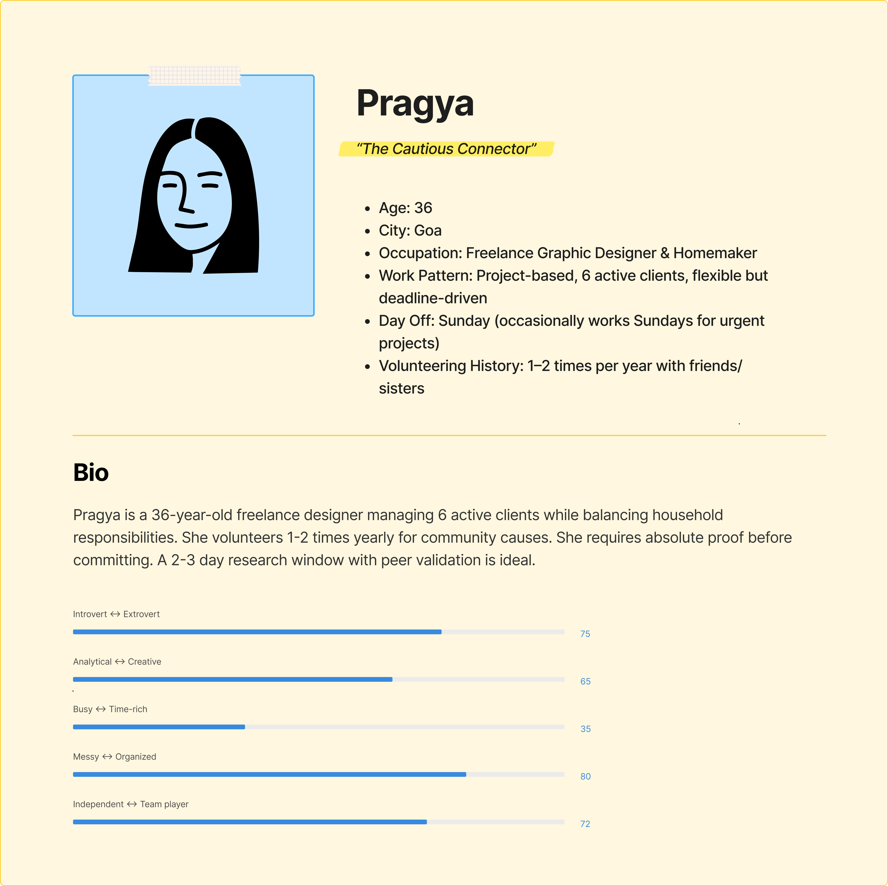
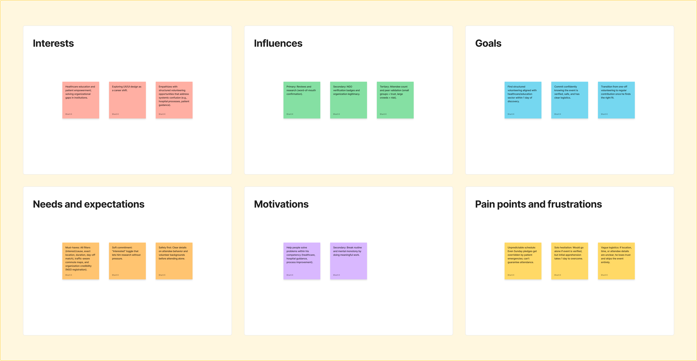
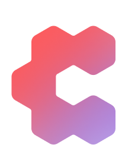

Designing an iOS micro-volunteering ecosystem with strict 2.5-hour time caps, upfront NGO verification, and guilt-free exit sheets to eliminate checkout drop-off for working professionals.

Interviews with 24 urban professionals revealed three core friction points stopping volunteer signups:
All 24 professionals interviewed searched for volunteer opportunities on social media, but abandoned checkout prior to confirmation.
Inability to verify NGO authenticity upfront was cited as the single most critical reason for dropping off.
Volatile work hours created fear of committing and facing social guilt if sudden client deadlines forced cancellation.
Capturing the real-world schedule, safety, and commitment constraints of urban professionals.
Radiology Tech • Gurgaon • Erratic Hospital Shifts
Works unpredictable rotational shifts in a fast-paced diagnostic center. Genuinely wants to give back on off-days, but cannot afford all-day commitments that drain his energy before next night shifts.
Strict duration caps (<2.5 hrs), commute radius <5km
Vague open-ended agendas and slow sign-ups
Strict 1.5h - 2.5h slot duration selector
Bite-sized high-impact weekend volunteering


Prioritizing core MVP features (MoSCoW) and structuring a clear, low-friction information architecture.
Features non-negotiable for solving the Intention-Action gap:
Features that deepen confidence and return habits:
Future exploration for community loyalty:
Six user flows guiding volunteers from initial discovery to spot confirmation.
Rapid sub-60-second onboarding that captures location radius (<5km) and availability without requiring lengthy registration forms or upfront identity checks.
Comparing the Volunteer POV (eliminating commitment anxiety) against the Organiser's POV (streamlined event creation & live cohort operations).
Three pivotal design choices and the trade-offs accepted to eliminate commitment friction.
Built on an 8pt spatial grid with rounded Nunito typography and accessible contrast ratios.
Tap directly on the phone or click steps to test micro-interactions and the live booking flow.

Test all 6 verified checkpoints: from initial discovery to duration customization and guilt-free spot lock.
Crafted in Figma adhering to Apple Human Interface Guidelines for iPhone 16 Pro Max.


Validating emotional confidence while preparing operational models for host NGOs.
| Feature / Decision | Status | Evidence & Next Steps |
|---|---|---|
| Trust Signals First Displaying NGO legal verification upfront |
✓ Validated | 100% of interviewees confirmed unverified links on WhatsApp/Instagram caused them to abandon signups. |
| Hard Time Commitments Capping event slots to 1.5h - 2.5h windows |
✓ Validated | Anurag and Rohan specifically highlighted open-ended "weekend" time commitments as their primary drop-off trigger. |
| Visible 48h Zero-Guilt Exit Allowing 1-click cancellations without penalty |
✓ Validated | Validated with 100% of volunteer interviewees; automated waitlist cascade designed to refill cancellations within 12 hours. |
| Attendee Vibe Breakdown Showing demographic percentages without chat |
✓ Validated | Validated across all female and first-time interviewees: knowing group composition (5 women, 60% beginners) unlocked solo attendance confidence. |
| Organizer Sad Path Handling rejected or mismatched legal documents |
• Designed (Gap Closed) | Added clear UI states for 24h verification review, rejection feedback, and compliance re-submission. |
| Post-Event Loop & Impact Vault Instant proof, 1-tap vibe checks, and certificates |
• Designed (Gap Closed) | Flow mapped out from completion to certificate generation to drive repeat participation within 7 days. |
"The biggest revelation was discovering that commitment friction is a two-sided marketplace problem. While I optimized the volunteer booking experience for maximum psychological safety, sustainable reliability depends equally on the NGO's operational reality. Designing a 1-tap cancellation sheet for volunteers creates a staffing challenge for the coordinator, a challenge I plan to address in Phase 2 with automated waitlist cascading."Bharati Kamble, Visualiser & UX/UI Designer